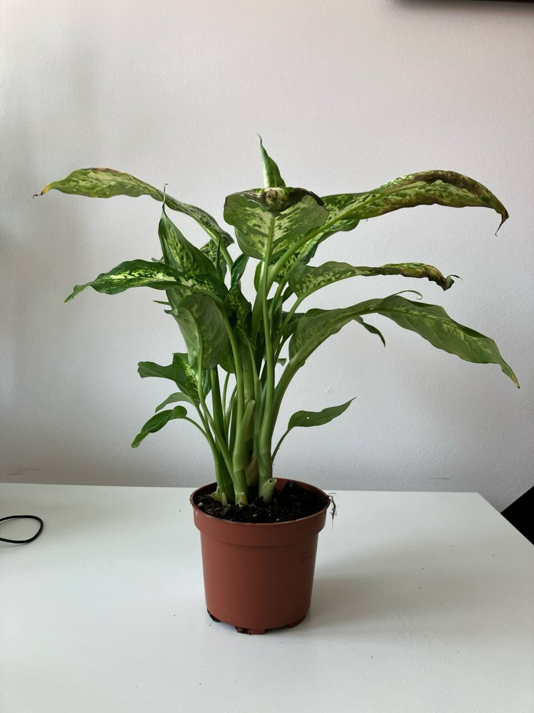

Activity
- Scheduled
- Feeding 01-09-2024
Dieffenbachia Compacta Plant Care Guide
Environment
Light
- Indirect Light: Dieffenbachia Compacta thrives in bright, indirect light. Direct sunlight can cause the leaves to scorch, while too little light can result in leggy growth. A spot near an east or north-facing window is ideal.
Soil
- Well-Draining Soil: Use a potting mix that retains moisture but also drains well. A mix of peat, perlite, and regular potting soil works well.
Temperature
- Warm Temperatures: Dieffenbachia Compacta prefers temperatures between 65-75°F (18-24°C). Avoid cold drafts and sudden temperature changes.
Routine job
Watering
- Watering Schedule: Keep the soil consistently moist but not waterlogged. Water when the top inch of soil feels dry to the touch. Reduce watering in the winter when the plant's growth slows down.
- Humidity: This plant prefers higher humidity levels. Mist the leaves regularly or place a humidifier nearby if the air is dry.
Feeding
- Fertilization: Feed the plant with a balanced, water-soluble fertilizer every 4-6 weeks during the growing season (spring and summer). Dilute the fertilizer to half the recommended strength.
Potting
- Container Choice: Use a pot with drainage holes to prevent waterlogging. Repot the plant every 2-3 years or when it becomes root-bound.
Troubleshooting
- Common Pests: Watch for pests like spider mites, aphids, and mealybugs. Treat infestations with insecticidal soap or neem oil.
- Leaf Care: Wipe the leaves with a damp cloth to remove dust and keep them clean. Remove any yellow or damaged leaves to maintain the plant's health.
- Toxicity: Dieffenbachia plants are toxic if ingested, so keep them out of reach of pets and children.
Pruning
- Regular Pruning: Prune the plant to maintain its shape and encourage bushier growth. Cut back leggy stems and trim any dead or yellowing leaves.